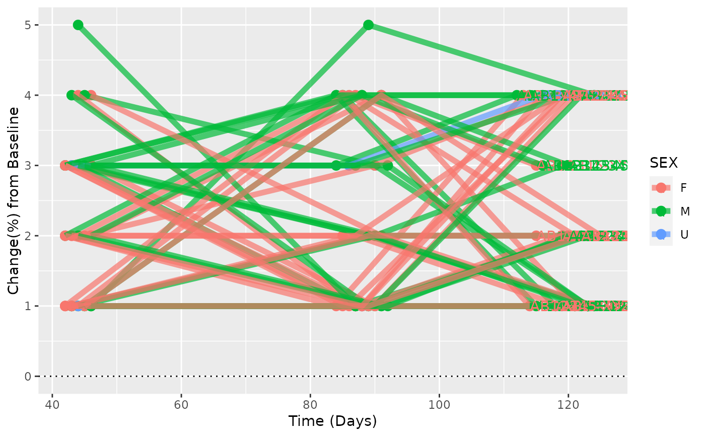

Description of this plot
spiderplot_simple(
anl,
byvar = "USUBJID",
days = "TRTDURD",
mes_value = "PARAM",
group_col = "USUBJID",
baseday = 0
)The analysis data frame (e.g. ATE.sas7bdat on BCE)
Analysis dataset
Variable with time in days
Variable with measurement
Variable to color the individual lines and id in plot
Numeric Value, pts with only smaller values will be cut out
ggplot object
library(dplyr)
ADSL <- rADSL
ADRS <- rADRS
ANL <- left_join(ADSL, ADRS)
#> Joining, by = c("SUBJID", "STUDYID", "SITEID", "USUBJID", "AGE", "SEX", "ARMCD", "COUNTRY", "RACE", "STRATA1", "STRATA2", "BMK1", "BMK2", "SAFFL", "EOSSTT", "ARM", "ACTARM", "ACTARMCD", "AGEGR1", "TRTDURD", "EOSDY", "DCSREAS", "DCSREASP", "DCSREAS_GRP", "DTHFL", "DTHCAUS", "AEWITHFL")
ANL %>%
dplyr::filter(PARAMCD == "OVRINV") %>%
spiderplot_simple(group_col = "SEX", days = "ADY", mes_value = "AVAL")
